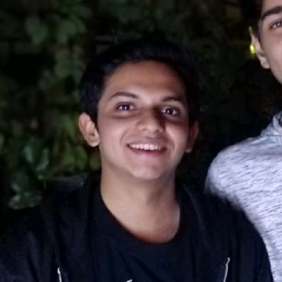

Tejas Rathod
I embarked on my student journey at Symbiosis with a strong start in the first year, achieving excellent grades while also relishing the vibrant student life. I captained a victorious 5-a-side football team during the college fest, which was a rewarding experience. However, the emergence of the COVID pandemic brought about significant changes. Uncertainty loomed, and concerns about my academic trajectory surfaced. Despite my initial efforts to adapt by enrolling in online courses and joining the Rotonity Club, the pandemic posed challenges that affected my academic performance in the second year.
A pivotal moment occurred during my fourth semester when I, along with my group members Vinay Patil, Saijal Singhal, and Yash Sakaria, initiated a transformative drone project under the guidance of Dr. Harikrishnan and Dr. Priti Shahane. Over the span of a year, we collaboratively built an AI-powered multipurpose drone from scratch, addressing critical challenges in forest rescue operations. The culmination of our efforts resulted in submitting a paper to Hardware X, which is poised for publication. It was during this phase that my career path began to crystallize, propelling me into deeper engagement with my field of interest.
In my third year, I embraced diverse responsibilities. Assuming the role of Technical Head for the club, preparing for the GRE, and pursuing an embedded systems specialization reflected my commitment to personal and professional growth. Amidst these pursuits, a personal loss due to COVID underscored the gravity of the challenges I was navigating. Despite the trials, I achieved an impressive 8.4 CGPA, a testament to my resilience.
The momentum continued into the sixth semester, as I and my group embarked on an ambitious Agricultural Robot project under the mentorship of Dr. Ujwala Kshirsagar. This endeavor culminated in a patent publication and grant pursuit, attesting to the innovation and impact of our work. Simultaneously, my involvement with the Rotonity Club and my foray into embedded systems deepened my conviction: my passion lay in excelling in the realm of AI.
With this clarity, I sought admission to the SCAAI lab and secured a place. My final semester, dedicated to my internship, was a pinnacle of fulfillment as I immersed myself in the AI domain. My CGPA of 10, achieved in my final semester during my internship at SCAAI Lab, underscores my resolute commitment to my chosen field. This accomplishment was a direct result of my immersion in the domain of my aspirations, marking the pinnacle of my academic journey.. Throughout my journey, I maintained discipline and attentiveness, qualities that have defined my approach as a student. In the realm of Artificial Intelligence, I augmented my knowledge through online resources and practical project applications. Leading project teams, I meticulously crafted AI architectures from scratch.
My student journey embodies flexibility, perseverance, and the ability to thrive under pressure. It has been a path of exploration, transformation, and unwavering commitment to growth.